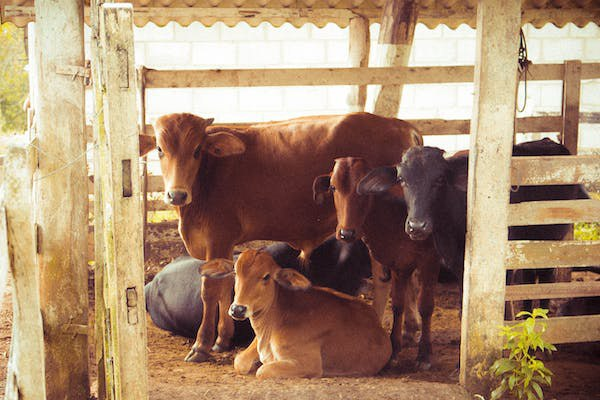
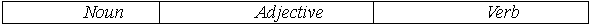

Lesson 5
UNIT 2
My specialty is techologist
BASIC LIVESTOCK PRODUCTION

Domestication of animals
Learn the active vocabulary of the Lesson and be ready to use it in your further work:
Been
n – бджола;
buffalo
n – буйвол;
camel
n – верблюд;
depend
on v – залежативід;
distribute
v – розподіляти;
domestication
n – одомашнювання;
draw
v – тягнути;
dwelling
n – житло;
fowl
n – свійськаптиця;
goat
n – коза;
habitatn– середовище проживання;
huntv– полювати;
maintainv– утримувати,тримати;
pign– свиня;
prolific
a – плодючий;
raising
n – розведеннятварин);
require
v – вимагати;
restrict
v – обмежувати;
sheep
n – вівця,
вівці;
source
n – джерело;
source
of food – джерелоїжі;
supplyn,v– постачання, запас; постачати
запасати;
tamen– приручати;
tamingn– приручення;
yakn– як;
zebun– зебу.
Read and translate the text:
DOMESTICATION OF ANIMALS
Agriculture
and animal raising required the domestication of both animals and plants,
raising of species useful for human beeings, and taking care of the factors that
kept them alive and productive.
Domestication
made the species dependent on humans. Economic necessity is probably the main
factor leading to the birth of agriculture.
Domestication
of animals is more than taming. Their habitat is restricted, protection assured,
food supply maintained, and most important, breeding farm animals is done under
human management and control. Animals were domesticated for the following
purposes: as a source of food, clothing, etc; as assistants used in various
human activities; as pets.
Cattle
are the most important of the animals domesticated by man and, next to the dog,
the most ancient. Domesticated cattle belong to the family Bovidae, which also
includes the buffalo, the bison, yak, zebu and some others.
The
dog is likely to be most widely distributed and variably used domesticated
animal. It assists hunting, draws sledges in northern regions, a hairless type
is bred for producing food in Mexico, helps the police, watches man`s dwelling
etc. Besides, a dog is really our best friend, which trusts you and is always
happy to see you.
Pigs
were domesticated in China around 4900 B.C., about 7.000 years ago. They have
been domesticated in Thailand as early as 10.000 B.C. Pigs are good to eat and
prolific. So it`s no wonder pigs have become among the most popular of domestic
animals. They have been introduced to all continents but Antarctica. Most modern
pig breeds were developed in Europe, from where they were first introduced into
the New World. Spanish explorers brought the first pigs to the Southeast in the
early 16th century, not long after Columbus had discovered America.
The
horse was perhaps domesticated in Central Asia, where Przhevalsky horse is still
found wild today.
In addition to the animals mentioned above there are some other animals that have been successfully domesticated by man. They are fowls, camels, goats, sheep, bees and others.
GRAMMAR EXERCISES
I. Answer the following questions:
1.What
required the domestication of both animals and plants?
2.What
was the main factor leading to the birth of agriculture?
3.Why
are domestic animals important to man?
4.What
kind of food products do domestic animals furnish us with?
5.What
were animals domesticated for?
6.Which
domesticated animals are the most important for man?
7.How
are dogs used by man?
8.What
can you say about domestication of pigs?
9.Where
was the horse domesticated?
10.What other animals have been successfully domesticated by man?
II.Group the following by parts of speech:
Animal, agriculture, domestication, species, productive, necessity, main, economic, have become, is restricted, food, ancient, help, prolific, fowls, camel, depend on, is done, hairless, assist, various, include, important, human.
III. Find an extra word:
a)pig,
horse, yak, fowl, zebu, goat;
b)hunting,
animal raising, domestication, taming, breeding;
c)pork, beef, lard, milk, eggs, clothing, mutton.
IV. Give synonyms to the following words and word-combinations:
Spend,
harmful, modern, independent, wild animals, to restrict, unsuccessfully,
unpopular.
V. Fill in the blanks with the necessary words in brackets:
(
Were
domesticated, domestication, domestic, domesticated).
1.The
……of animals is associated with the birth of agriculture.
2.Man
……animals useful for him.
3.……..animals
helped ancient human beings to survive.
4.Pigs …….in China about 7000 years ago.
VI. Match the words with their corresponding definitions:
VII. Translate the sentences into Ukrainian according to the model:
Зразок:
In future the problem of unemployment (to settle). In future the problem of
unemployment will be settled. У майбутньому проблема безробіття буде вирішена.
1. People (to give) more time to enjoy themselves. 2. Much work (to perform) by machines. 3. Many teachers (to replace) by computers. 4. New sources of energy (to found) by scientists. 5. The energy (to use) more efficiently by people. 6. The problem of feeding people (to improve).7. All the nuclear weapon (to destroy). 8. Many ecological problems (to solve). 9. Life expectancy (to increase). 10. The cure for cancer (to find).
VIII. Translate the sentences into English:
1.Сільське
господарство вимагало приручення тварин.
2.Дикі
тварини були приручені людиною для того, щоб вони забезпечували їжу, одяг та
допомагали людині у господарстві.
3.Собака
найкращий друг людини.
4.Собаки
допомагають людям полювати, доглядати житло, їх використовують у поліції та ін.
5.У
деяких країнах світу собак розводять для їжі.
6. Свині були приручені дуже давно в Таїланді. Вони були завезені на всі континенти.
IX. Make the sentences interrogative and negative according to the model:
Model: This
bank was founded 2 years ago (affirmative sentence).
Was
this bank founded 2 years ago? (general question).
When
was this bank founded? (special question).
This
bank was not founded 2 years ago (negative sentense).
1. Alaska is separated from the USA by Canada. 2. The exhibition of plants will be closed tomorrow. 3. The Statue of Liberty in New York was built in 1886. 4. English is spoken in the USA, India, Australia and many other countries. 5. America was discovered by Christopher Columbus in 1492. 6. A new part of the world was called after Amerigo Vespucci. 7. Alaska was bought by the USA from Russia in 1867. 8. The first national park Yellowstone was established in 1872. 9. The first U.S. zoo was opened in Philadelphia in 1874. 10. Manufacturing of blue jeans was started by Levis Strauss in 1850.
X. Make up sentences with the verbs:
To
depend on;
to
take care of;
to
belong to;
to
maintain;
to
require;
to
raise;
to
restrict;
to
use;
to
include;
to
supply;
to
breed;
to
distribute;
to
introduce;
to mention.